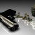
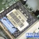
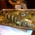

64-bit Opera, and out-of-process plug-ins
Update, November 22nd 2012: Please note that Opera 12.00 final shipped with 64-bit and OOPP support, and that as of version 12.02, OOPP is disabled for Windows 32-bit.
Update, February 9th 2012: Article originally published just before Christmas 2011, and now updated with a new set of builds.
Thanks for all your great feedback so far. We've updated the out-of-process plug-ins (OOPP) builds to a newer version containing many fixes and updates. A lot of work has been done in the plugin backends on our various platforms. Keep testing with all the plugins you usually use, and remember to report back any issues to us!
Known Issues
All platforms
- Plugin crash reporting not working yet
Linux/FreeBSD
- No Xt support
- Sun JDK might not work correctly: use IcedTea (OpenJDK) instead
- gecko-mediaplayer plugins are more prone to failure
- When hovering over a tab thumbnail that extends over the plugin area, the plugin animation is not restarted after hover out when compositing is off
- Typing in an auto-activated plugin is not working
- Opera may crash on exit
Mac
- Hardware acceleration is off by default on the Mac
- No IME support
- Some content is invisible in transparent Flash
- System dialogs may open behind the browser window
- No context menu for Flash
- The Flip4Mac plug-in may not play videos
- You may get drawing artifacts while scrolling
- Hardware acceleration is disabled by default, due to drawing issues with plug-ins
Windows
- You'll experience choppy scrolling on pages with embedded Flash
- Scrolling inside windowed Flash is not working
- WMP player plugin controls get corrupted after scrolling
- Silverlight may have some issues
- Opera may crash on resizing the plugin window
- Minimal restart in Opera's crashlog dialog works as a full restart
- You'll experience a temporary freeze when deleting plugin data
- Some strings in 64bit Opera will suffer corrupted text substitutions
- The Shockwave Director plugin is not detected under 64bit Opera
Original text follows
Introduction
As the snow settles on the ground, and the elves draw close to finishing construction of all their toy orders, it may not surprise you to learn that Opera's little helpers have also been very busy, adding exciting new innovations to our desktop browser!
As a last release before Christmas, we are bringing you a new labs release featuring two exquisitely wrapped presents:
- 64-bit builds
- Out-of-process plug-ins
Let's look at these features in more detail.
Out-of-process plug-ins
We monitor our built-in crash logger carefully to see what is still causing browser crashes, post release. One very common source of instability is one that we unfortunately can't fix ourselves: browser plug-ins. We fixed this problem for Opera on Linux and FreeBSD a long time ago by running plug-ins in a separate process. This allows us to control exactly what communication takes place between Opera and running plug-ins, improving security and stability in the process. If a plug-in accidentally crashes under this system, Opera will keep on running, and a simple page reload will correct the plug-in.
This architecture is now coming to a Windows or Mac machine near you! This labs release provides an early preview of the new rewritten version for Mac/Win/Linux/FreeBSD, constructed to allow our code to work across all platforms.
64-bit builds
Bringing the out-of-process plug-in architecture across to Windows and Mac also brings another advantage: the ability to run plug-ins compiled for Intel 32-bit architecture from within a 64-bit Opera process. And 64-bit Opera is the other delightful gift we're giving you at Opera Labs this Christmas!
64-bit Windows and Mac have been in the works for a while, but we didn't want to release them until we had a way of running all plug-ins that's completely transparent to the user: This is now possible with the out-of-process plug-in architecture, so here we are! The 64-bit versions of Opera offer performance improvements in some specific areas and allow Opera to have more freedom in allocating memory.
Download Builds!
Release notes and known issues
Original issues removed as they are no longer relevant.
Note on bug reporting: This build is based on Opera 12 (Wahoo) therefore it includes all the features from recent Opera Next snapshots, including hardware acceleration. When reporting plug-in bugs in this build, it's always interesting to know if hardware acceleration is on or off, and if toggling it makes a difference. You can turn off hardware acceleration by setting opera:config#UserPrefs|EnableHardwareAcceleration to 0 and restarting the browser.
Read more...
Chris Mills

Chris Mills is a web technologist, open standards evangelist and education agitator, currently working at Opera Software in the developer relations team. He spends most of his time writing articles about web standards for dev.opera.com and other publications (such as .net mag and A List Apart), giving talks at universities and industry conferences, and lobbying universities to improve their web education courses. He believes that education is the answer to everything, but in particular he is passionate about using education to improve the overall content quality, accessibility, usability and future-viability of the Web.
He is the creator of the Opera Web standards curriculum, contributor to the WaSP InterACT project, and coauthor of InterACT with web standards: A Holistic Approach to Web Design. In August 2011, he also accepted the position of co-chair of the newly-formed Web Education Community Group.
Outside work he is a heavy metal drummer, proud father of three and lover of good beer.
This article is licensed under a Creative Commons Attribution 3.0 Unported license.
Comments
-

A Mac OS X Universal Binary app is an app that should run on both Intel and PPC platforms. It has nothing to do with it being 32 or 64 bit. Just sayin'.
-
These are good news, because the plugins (with Adobe Flash Player in the first place) are causing about 99% of all Opera crashes. On my PC at work it's so unstable, that Flash Player (especially on YouTube) is causing the blue screens... o_O But it happens only in Opera, so I will look into this new labs release for sure. Thanks! :)
-

@glimps3d - good point; I've updated the wording to suit.
-
but only 7 seconds exactly :D
-
Can't wait to see stable x64 build.
-
And a very merry Xmas to the Opera labs team and thanks for the early Chrissy present :D
-

add to issues:
-
@bleicher
-
Can I install it on existing 1191 build?
-
64bit/Windows7: Switching through tabs causes slow refresh rate - you have to wait a while for site to be completely redrawn.
-

@bleicher: the panel-switcher-thing is the same as the scroll bar not being draggable and the Opera Labs-Button not reacting on the far left. This is an issue of the latest Next-build (far left and far right of the browser do not respond) and thus also a matter here ;)
-

Win 7/64-bit version looks good, but had a couple of initial problems. Wand.dat copied from Opera Next wasn't recognized until I switched off Hardware Acceleration. Now coming back to HA, it's recognized.
-
Would love to hear what Opera's thoughts in the benefits vs the downsides of 64bit-ness in a browser like Opera.
-

In Win 7/64, I set "Use my current web browser," always Opera (Next), as the default in the Control Panel > Program Defaults > Set program access and computer defaults > Custom. Since this build is not listed there, there's no way to get it recognized and that's making it harder to use and test. That is, if I click an email link, Opera Next opens. Anyway around that? This appears to be a very stable build and worthy of using/testing as a primary browser.
-
Win7/64 version crash when closing with :
-
No text in "open with" context menu.
-

Thanks for the feedback everyone! This is really useful.
-
I just encountered a bug , When i played a video , i closed it 30 seconds before the end , but the audio kept playing. it happened only once so far.
-
ALso got a problem setting this version as default browser...
-

@Skvov comment: I also experienced the audio continuing to play on the first video I tried (at yahoo.com), and had to close Opera to get it to stop. When I went back, the video wasn't there and other videos from the same part of Yahoo didn't do it. Nor have ones from elsewhere, so far.
-
I am having problems to understand the difference between this software and the Opera Browser, or Opera Next Browser I am using right now. None can be updated at this moment, but I am defiantly running a 32-Bit version on a x64 System. So, is this here an add-on or ... yeah, I just don't get what this exactly is... *sorry*
-
@Michael Smith , then please close this page :)
-
another "bug" the Oper_plugin_wrapper.exe crashes every now and then when i'm playing a youtube playlsit , the browser itself doesn't crash ( which is a good thing ) i press "close" on the crash report and the videos continue to play! WIN !
-
Running openSUSE 12.1 and have been having problems with video tearing in recent Opera versions. I found this version does not exhibit this problem, but it seems to freeze my system after just a little time, requiring reboot. Disabling hardware acceleration causes the problem with video to recur. I haven't yet been able to confirm if disabling acceleration solves the stability issue, but will report back.
-
From previous build of Opera 12 whenever i try to start Unite, Opera crash and the same thing with this one.
-

so will xt based plugins no more be supported fo Linux/FreeBSD due to the new cross-platform architecture ?
-
@ Ricardo M. Rubert
-
Disabling hardware acceleration seems to have resolved the stability issue, and it also seems that the video tearing is actually mostly eliminated except for one site in particular where it's still quite bad.
-

Could you tell me, please, how long can we expect support for multi-core processors (or multi-processor systems)? Thanks.
-

Ricardo: Different teams have different projects. 64-bit work has several benefits: Opera will not need Windows 32-bit compatibility support. Performance may be a little faster. Better memory model and MORE memory access, good for lots of tabs and GREAT for future 3D game support. This also sets a foundation for Windows 8, and for more Core improvements in Opera. Some of your feature suggestions are interesting, and many people have asked for them already. But mostly they are the responsibility of a different team, and will appear (or not) in accordance with relevant efforts.
-

Opera-京剧哥 你太牛逼了，终于马力全开！！！三系统全跑64位！！！哇哈哈～
-

only to have a 964bit version shows that Opera is paying attention on wishlist forum
-
@Nikola Sivkov Oh, I'm sorry that my programming skills, while I'm a designer, obviously don't match your requirements to contribute my personal users experience to one of my favorite software vendors. I thought that every bit would make a difference and that the software intentionally was not only developed for the geeks. My bad.
-

@Michael Smith. Sorry for the confusion - I appreciate that it can be confusing having so many different types of browser building hanging around. The difference is this:
-

@Khaled Khalil - oops, more confusion, sorry! We don't mean that we will no longer support these plugins, just that they don't work in this particular build.
-

@myzzkk
-

@Chris Mills: I've heard lots of people saying that the fact that Opera is using only one core is often advantage, because it keeps other applications responding. If you are going to add multi-core support, please give us option to use only one core. :)
-
On my Kubuntu 11.10 apparently the module canberra-gtk is needed. The tabs are covered.
-
Unfortunately, this version crashes on YouTube too... :( Luckily for me it didn't cause the blue screen this time. I tried reinstalling the flash player plug-in, but it didn't change anything.
-
I get the crashes at youtube - the window vanishes - on html5 video. Removing myself from the html5 program or viewing videos without signing in works pretty well. Checking webM and html5 video examples at other sites also causes the crash. Flash vids seem pretty stable.
-
Opera creates an icon on desktop and on the quick launch bar without user-agreement.
-

Opera Unite on - CRASH
-
@Daniel - Confirmed
-

Something different: at http://betanews.com/, with Opera Next and using an ad blocker called Ad Muncher, the Load More Articles link at the bottom brings up the next page. With the Labs version, the next page is blank. Wonder why?
-
Hey, I have similar problem to Nikola Sivkov.
-
Just starting, downloading the 64-bit version. One question: Somewhere I saw the Plug-in XHTML+Voice was not enabled, but the Extensions Gallery does not contain this plug-in. From where must one find this? Also, Google Reader's buttons are all over the place and require re-arrangement as they waste far too much screen space. I'm on a Flatron W1934S at 1440x900 resolution!
-

I try in Windows 7 pro and Windows 8 wdp (16 Gb).
-

Nice!
-

I'm excited to test this release! : ) Maybe in the future can you add the lightweight theming system, so the user can select the theme's background and use it on top of a skin from the speed dial configuration box??! PLEASE. THIS WOULD ROCK!! USERS CREATING THEIR OWN THEMES WOO!!
-

I have noticed also.. that opera collects the cache ( if i browse from one website to the next, storing it for easy page loading when i press back ) and starts slowing down.. can you guys implement a new cache system for that.. say only remember 3 last pages out of the 20 so it doesn't conserve as much ram? i know it clears after i close it, but just saying... it slows down after a while and i have to restart the browser.. which is soo boring to do.
-

you should make it have an animation when the program starts and closes. like the o logo in the middle of the screen blowing up into the browser or something. you guys have the power. i believe in you. :)
-
Please make the plugin process using different CPU core than opera. Sometimes using flash (in some games), use 100% of one Thread, making opera waaaaaaaaaay slow.
-

gmail still very sluggish. win7 32-bit.
-

how to import roboform installed opera x86?
-
Niceeee x86 ....
-

this version can't read local pdf file
-

Too many crashes, erratically and Crash Feedback window doesn't appear.
-
Hi 2 all my friends happy xmas 2 u all ad God bls amen
-
-
when you make opera system for kill the windows ????????????
-
Finally a native x64 build for windows! Thank you! Switching back from Forefox.
-
Nice :), Now move it to Opera Next. :)
-
When it will be released Opera 12 both x86 & x64? Any chance before Christmas?
-

-quote-On their dev build page it says "Xt-based plugins are not supported, for example VLC and Adobe Reader."
-

@everyone - thanks for all the continued feedback! We won't get Opera next featuring this stuff out before Xmas, but soon in 2012!
-

Hi,
-
I like the idea of "Out of Process Plugins" (I attempted to pitch a similar idea to Opera Software many years ago in a forum topic that appears to be gone now as a way to run 32-bit plugins in a 64-bit browser, but was ignored at the time). I may have to see if I can still log in to Operawatch to post about this, or if Daniel has closed it down for good, as I consider both "Out of Process Plugins" and 64-bit builds to be very much worth blogging about.
- UI passes URL that user typed in address bar to the layout engine, and layout engine (running as a limited user) loads page, renders it, and sends result back to the UI to display for the user.
- User interaction is sent to the layout engine by the UI, and all responses to user interaction are processed by the layout engine (once again running as a limited user).
- The process that renders the UI can be running with admin rights, but the layout engine's process will always run with limited rights to minimize security risks.
- All extensions are processed by the layout engine (running with limited rights), and results are sent back to the UI for it to display to the user.
- Downloaded files to be saved are sent to the UI so that they can be saved with the same rights that the user launched the browser with.
-
Well, I guess I can forget about posting anything on Operawatch. I hadn't realized that Daniel had disabled it.
-
перевести на руский язык
-

chriss plz make one for the fhone :LG cookie kp500 plz i think yes PS i'm srry my engelisch is not good realy
-

Opera x64 isn't pinned into taskbar on Windows 7 X64
-

@P2O2
-

@Arthur Wilkinson thanks for the suggestion - I've pointed the desktop developers to this thread so they can see it and consider it.
-
@ Chris Mills:
-

@Chris Mills, Monday, January 9, 2012:
-

i've been using this build for my main browser ever since it's release. i had one crash with the plugin wrapper but it didn't take down opera 64. other than that, i don't foresee myself going back to 32-bit opera. :)
-

@ Arthur Wilkinson
-
@ Chris Mills:
-

I have recently started using the 64 bit browser and after watching videos on You-tube and closing the window the sound bit of the video continues to play even after the browser is closed and after I watch long videos/movies on youtube when I try to loginto any other site then the browser does not respond and have to restart it....apart from these I love the way it works...
-
Great work on the 64 bit Opera Browser for Linux!! My favorite browser works great for Ubuntu again!! I sure missed it!! Works better than Firefox or Chrome. Chrome has been so riddled with bugs lately. And decided to try out Opera again. What a huge difference with the new Out of Process Plugins by running the plugins differently. Thanks for making Opera run so much better on LInux again!! It is now my default browser!!
-

Just reported DSK-355239
-
well SO far SO good I've not had an error yet including with youtube videos although one little niggle is when scrolling a page with embedded the video disappears until clicked on
-

The click to plug in needs to show the name of the plug in it is prevent from loading
-

On which build based this one? Judging by the comments above, it's previous laboratory build. Is there fixes from version 12 b.1289 included?
-
Vasja: based on build 1239, so fixes in build 1289 are not included.
-

HW Acceleration still feels sluggish; much better performance disabled. W7 x64, Nvidia gt 430, WHQL drivers. Strangely enough, the first few builds that were HW accel capable, released way back when, were by far the fastest - very snappy. Also, on this very page in particular (Opera Labs), scrolling is very sluggish.
-

HWA might be a little bit sluggish sometimes, but it is rock solid for me for the first time :)
-

(You should have create new lab article .. too many comments here - just saying...)
-
Impossible to open a photo on Facebook.fr, Opera closes all only
-

I don't care if the 64 bit version is slower than the 32bit version (which I didn't test) - it likes my system and is faster than Chromium 18
-
Is it possible to set this new build as default browser?
-

RSS Feeds not retained from 1211. All other settings seem ok. (Imported by renaming the AppData\Local\Opera\Opera Labs\ to AppData\Local\Opera\Opera Labs OOPP x64\)
-
Peacekeeper
-

pinned into win7's taskbar as well ;)
-

I had to switch away from Opera last year - my current sessions are hitting 3.5 - 4GB and crashing/freezing. Can't wait for Opera to be x64 and rock solid stable in future, this is a major step on the way. Thanks for the work guys!!
-

Has anyone been able to use the e-mail part of these 64 bit builds? My ISP uses POP, and when I try to use e-mail, the whole program starts crashing on me. If I delete the e-mail account, the crashes stop. It did this in the 1211 build too.
-

"Is it possible to set this new build as default browser? "
-
I am looking sheerfully forward to this to be released as a stable release!
-
it works fine until i enable email and opera link, especially email. crash crash crash crash even at the very starting.Win 7 64bit.
-

http://portal.wecreatestuff.com/portal.php
-

is that something like Opera will be 64-bit rather than the standard 32 bit one? Opera is currently in 32 bit, i guess it will be better if Opera will also have 64 bit version for 64 bit machines....
-
Now if we can just get the Upload to skydrive bug fixed I'd very happy I'm just so peeved when it comes up with sorry you can't upload a folder msg all the time
-
This runs better on my machine than the current version of Opera, or the 32-bit version of Next. Please, please, in the next build allow setting to default.
-

HOW SET 64BIT AS DEFAULT.
-

Why Content Blocker doesn't work? I have many pages listend, but opera allways load them! Using Win7 Prof. 64 Bit with Opera 64Bit V12.00alpha Build 1293. Great work! Thanks a lot! (I would buy a boxed version)
-
Excellent! Dedicating plugins to a seperate process is a good idea. I'd want to see each tab having its own process as well, since the Opera main program is using more CPU and memory than the plugin wrapper (according to Windows Task Manager).
-

I am experiencing some odd issues with Opera 12.00 x64 on Windows XP x64 Pro SP2. The interesting thing is that I was experiencing some of them with Opera 11.60 under Windows XP x86 Pro SP3.
-

We miss x64 bug fixes very very much. Please change focus to x64 development
-

Thank you for the 64-bit Opera plugin update. I will check it.
No new comments accepted.glimps3d
Thursday, December 15, 2011
Paweł Pawlak
Thursday, December 15, 2011
Chris Mills
Thursday, December 15, 2011
@Paweł - glad you like the look of it ;-)
serious
Thursday, December 15, 2011
suawek
Thursday, December 15, 2011
Thanks for the good work!
Athlonite
Thursday, December 15, 2011
bleicher
Thursday, December 15, 2011
panel-switcher (this tiny line on the side) not working
Kamil Darczyński
Thursday, December 15, 2011
Confirm, not working on "Opera 12 build 1191" too.
nick_el_son
Thursday, December 15, 2011
grotos
Thursday, December 15, 2011
I've been using Opera 64 for about hour and generally it feels stable. good work!
Christoph
Thursday, December 15, 2011
highstream
Thursday, December 15, 2011
Also, there's a site on my Speed Dial, real-debrid.com, that kept throwing up the same certificate box, something with "static" in it but I can't find the screenshot I thought I saved. The box would appear, then disappear after a couple of seconds if I didn't click on something. If I was fast enough, I'd get to the Approve box on the second tab and click that, but the box would keep coming back up. I'd open another Speed Dial screen just to check and it would start all over again. Finally, I decided to just click the Approve tab and that seemed to cool it down a lot, tho not completely. It wasn't until I turned off HA that it stopped (or perhaps that was coincidental?). Coming back to HA, there's no longer a problem with that site on the Speed Dial.
P.S. After saving this post, the screen did not refocus on my message, but went to about halfway down the page. After typing the previous sentence, it focused on the top of the page.
ClashCityRocker
Thursday, December 15, 2011
There are several upsides, and several downsides too ( swollen pointers, more memory bloat). Do these downsides get offset by the gains of the 64bit architecture?
highstream
Thursday, December 15, 2011
mkr
Thursday, December 15, 2011
r6025 -pure virtual function call
cyberrufus
Thursday, December 15, 2011
Chris Mills
Thursday, December 15, 2011
Nikola Sivkov
Thursday, December 15, 2011
ZeusII
Thursday, December 15, 2011
highstream
Thursday, December 15, 2011
Michael Smith
Thursday, December 15, 2011
Nikola Sivkov
Thursday, December 15, 2011
Nikola Sivkov
Thursday, December 15, 2011
cellist
Thursday, December 15, 2011
Christian Rivest
Thursday, December 15, 2011
Khaled Khalil
Thursday, December 15, 2011
or that is intended to be looked at and fixed after it gets stable ?
logytech
Thursday, December 15, 2011
i think you miss point the purpose of 64 bit. the future will be a 64 bit. this only to make opera a future proof. a sort like that. the other function on opera. it is not get good promote. if it promote like chrome browser e.g demo or something useful to tryout. it maybe get the attention. it is not get enough example or demo the opera can do but the others can not do right now. till when the opera user hope the tryout the other browser demo will compatible with this awesome browser. Do you Dev team make special page to introduce the awesome features available on opera to show out. i'm so envy that the other browser like Firefox, Chrome and IE have this page.
that just my 5 cent...
cellist
Friday, December 16, 2011
FWIW, running build 1191 with hardware acceleration successfully resolves the tearing everywhere I tested and seems stable on my machine. Using a Radeon card with ATI Catalyst drivers.
myzzkk
Friday, December 16, 2011
Cutting Spoon
Friday, December 16, 2011
This 64-bit Labs build seems overall quite nice. I have provided feedback already at http://my.opera.com/desktopteam/blog/2011/12/15/64-bit-and-out-of-process-plugins-builds-now-available-on-labs?cid=77410902&startidx=50#comment77410902 . I will have to attach an email account, set up Link, run some heavy stress tests that will load the memory access.
Something that interests me: Opera.exe seems to use only one CPU core even now, however OperaPluginWrapper.exe can use another (single) core. This is acceptable, and improves plugin performance when in Power Saver mode on my laptop. However it would be nice for everyone if Web Workers could also be deferred to another process, as discussed when Workers were first introduced.
ae868186
Friday, December 16, 2011
Tiago Wakabayashi
Friday, December 16, 2011
Michael Smith
Friday, December 16, 2011
Chris Mills
Friday, December 16, 2011
1. The Opera builds you download from opera.com/browser are our final, complete, stable, finished builds. Currently, this is 11.60.
2. The Opera Next builds you download from opera.com/browser/next are alpha or beta preview versions of the next version of the browser, after the finished stable one described above. These are mostly ok, but might have a few wrinkles to iron out. Currently, we are on Opera 12.00 alpha for the Opera Next version.
3. The Opera builds you will find here, at Opera labs, are pre-alpha, experimental versions to show case experimental new features that definitely aren't finished yet. These WILL have significant bugs present, and probably shouldn't be used as your primary browser, although we do make sure they won't eat your hard drive before release ;-)
Hope this helps - feel free to ask if you have any more questions. Designers are most welcome here, just as much as developers.
Chris Mills
dev.opera.com editor
Chris Mills
Friday, December 16, 2011
Chris Mills
dev.opera.com editor
Chris Mills
Friday, December 16, 2011
I'm not sure how long it will be before we see multi-core support. I will try to find out.
Chris Mills
dev.opera.com editor
Martin Kadlec
Tuesday, January 10, 2012
Ocky
Friday, December 16, 2011
severin@severin-desktop:~$ /home/severin/.local/bin/opera-12.00
Gtk-Message: Failed to load module "canberra-gtk-module"
opera [crash logging]: CRASH!!
/home/severin/.local/lib/opera-12.00/opera-12.00 got signal SIGSEGV at address 000000000071
Log was created here:
/var/tmp/crash20111216121044.txt
Killed
severin@severin-desktop:~$ Gtk-Message: Failed to load module "canberra-gtk-module"
Gtk-Message: Failed to load module "canberra-gtk-module"
Gtk-Message: Failed to load module "canberra-gtk-module"
When selecting 'Show menu bar' the tabs can't be seen.
Paweł Pawlak
Wednesday, December 21, 2011
11.52 / 11.60 freezes after watching a few YT videos (approx.. 5-10) and when I click on "End process" in the task manager, I get a blue screen.
12.00 build 1191 - same as 11.60
12.00 build 1113 - while watching a third video in a row, the whole system stopped working for about 5 min. I didn't do anything, but after a few minutes I got the blue screen.
12.00 build 1211 (32bit) - stopped working on the first attempt to watch a random video on YouTube. The browser crashed. But I didn't get the blue screen when I closed the Opera.exe process using task manager. On Google Chrome YT works (but I can't resize the player, and Chrome becomes extremely slow on YouTube), on Firefoks it works well, but this browser is very slow. But Chrome and Firefox are my only options for youtube... :(
EDIT: I reported this before and it seems that someone was trying to fix that, but this bug is still in Opera. And this new release have this bug too. Please, could you take a look at this? http://www.pafflick.com/operabug/
EDIT2: Never mind about that YT issue, I get rid of the flash player plugin, since Google Chrome caused a blue screen too. It happened more than once, so I'm pretty sure, that it's not a bug in Opera, must be something else...
cellist
Friday, December 16, 2011
Daniel
Friday, December 16, 2011
Daniel
Friday, December 16, 2011
Christian Rivest
Friday, December 16, 2011
highstream
Friday, December 16, 2011
Witold Baryluk
Saturday, December 17, 2011
I closed tab, which was playing some video with audio from youtube, using flash player (on reddit.com). I closed tab, but audio was still going for about 30 seconds (and it ended because video just was short).
32-bit Debian GNU Linux testing, HWA disabled.
Jeaux Moer
Saturday, December 17, 2011
Ciro
Saturday, December 17, 2011
Thank you for good job!
Javier Gutierrez
Sunday, December 18, 2011
I have been waiting for the Win64 builds, and plugin isolation for lots of time, and it is finally here.
BTW, x64 build feels quite stable, and reports about a 10% speed increase in PeaceKeeper comparing with its x86 counterparts.
Now waiting for CSS3 hardware accelerated animations, and Direct3D Vegas wrapper.
Jorge Campos
Sunday, December 18, 2011
Jorge Campos
Sunday, December 18, 2011
Jorge Campos
Sunday, December 18, 2011
jabakero
Sunday, December 18, 2011
Thanks :)
fisherman10
Monday, December 19, 2011
anyone can confirm?
windstory
Monday, December 19, 2011
any ideas?
Ricardo José Rodríguez Oronó
Monday, December 19, 2011
xeon0541
Wednesday, December 21, 2011
qwz
Wednesday, December 21, 2011
Abuchi akajuoyi
Thursday, December 22, 2011
Kai Anderßen
Thursday, December 22, 2011
Thank you for 'OS x - Edition' . TXH so much for doing it now. Later than the 'Wind... Editon' might look too ugly.
Much more THX for supporting Linux and Unix(BSD) such a long time ago! LOL
vandal7
Thursday, December 22, 2011
Sergei
Thursday, December 22, 2011
mbjun
Friday, December 23, 2011
Florin Eugen Ionescu
Friday, December 23, 2011
Remco Lanting
Friday, December 23, 2011
Could you get them to remove VLC from that list? It is no longer Xt-based ;)
-/quote-
* Remco looks at Chris Mills
P.S.: Quoting doesn't work :(
Chris Mills
Saturday, December 24, 2011
@Remco - thanks for the comments. Have removed VLC! We'll fix comment quoting etc asap.
P2O2
Thursday, December 29, 2011
I'm asking for a comparison table for Opera Lab, Opera Next and Opera (stable) with the most important records and fields. Reading three release notes and making notes on paper is a sort of regression. ;-)
Do not forget to add a column "done" for the features to be implemented soon (+/- (done/worked on) would suffice).
Regards
Happy New Year for whole Opera Team!
Arthur Wilkinson
Sunday, January 1, 2012
Also, I have been having some thoughts lately about something else that should be "Out of Process", and the idea is enhanced security. I figured I might as well post it here, since I don't really visit any of the development or labs blogs anymore.
The idea is quite simply that the layout engine should run as a separate process, and should always be executed with limited rights (even when the browser's UI is launched with admin rights). Theoretically this would add a layer of security, and may limit the number of possible security vulnerabilities. Especially if the plugin wrapper could also run with limited user rights (I'm not sure if every plugin would work right when run as a limited user, but I would hope that there would be less security issues that way).
Obviously I haven't sat down and thought out every detail about how it would work, but I assume something like this would be possible:
Obviously this would not prevent a lot of security vulnerabilities, however my thoughts are that this would help prevent some security vulnerabilities, and perhaps cut down on some of the risks of browsing on operating system where your web browser is running with admin rights. ;)
Arthur Wilkinson
Sunday, January 1, 2012
I guess this means it is time for me to disappear back in to whatever nothingness I came from. Thanks again for the new labs build. ;)
dilshod
Friday, January 6, 2012
jorrit
Saturday, January 7, 2012
Çağlar Yeşilyurt
Monday, January 9, 2012
Chris Mills
Monday, January 9, 2012
Thanks for the suggestion - yes, this is a good idea. I have suggested this to the team, and will see what we can come up with.
Chris Mills
Monday, January 9, 2012
And sorry about operawatch - yes, there hasn't been much activity there since Daniel left Opera. If you are still interested in contributing, there are other places you could consider. Let me know what kinds of things you'd like to do.
Arthur Wilkinson
Monday, January 9, 2012
There would have been some activity at Operawatch after I saw this Opera Labs release, however when I log in I can no longer find a way to post articles. I'd ask Daniel about it, but I don't think he's answering e-mails anymore. Not sure what happened to him.
As far as things I'd like to do, computer security has been very important to me for many years, and recently I've noticed that Opera's security feature where it blocks potentially dangerous websites does not protect against a lot of the stuff that I happen to come across (examples: [1] / [2] / [3] / [4] / [5] / [6] / [7] / [8] / [9] / [10] / etc). If it would be possible for me to be of some assistance making Opera Software's list of malicious websites/domains better, then that would be fun. I actually tried to e-mail David Story about that back in October, but I hadn't realized that he was no longer with Opera Software at the time.
P2O2
Tuesday, January 10, 2012
Thanks. I understand you read my expanded suggestion in comments to WebGL and Hardware Acceleration (http://dev.opera.com/articles/view/labs-webgl-and-hardware-acceleration/), as well?
Regards
jclins
Wednesday, January 11, 2012
Chris Mills
Thursday, January 12, 2012
> There would have been some activity at Operawatch after I saw this Opera Labs release, however
> when I log in I can no longer find a way to post articles. I'd ask Daniel about it, but I don't think he's
> answering e-mails anymore. Not sure what happened to him.
I'm not sure what happened to him either. I'll inquire inside Opera to see what has happened to operawatch, and if we are doing anything with it anymore. If you and a few other people are still interested in adding content, then I see no reason to close it down.
>As far as things I'd like to do, computer security has been very important to me for many years, and
> recently I've noticed that Opera's security feature where it blocks potentially dangerous websites
> does not protect against a lot of the stuff that I happen to come across (examples: [1] / [2] / [3] / [4]
> / [5] / [6] / [7] / [8] / [9] / [10] / etc). If it would be possible for me to be of some assistance making
> Opera Software's list of malicious websites/domains better, then that would be fun. I actually tried
> to e-mail David Story about that back in October, but I hadn't realized that he was no longer with
> Opera Software at the time.
Yup, David has left for pastures new as well! If you e-mail me about this I can follow up. cmills [at] opera [dot] com.
Arthur Wilkinson
Thursday, January 12, 2012
Sending e-mail. ;-)
neo007jag
Thursday, January 12, 2012
Kevin Johnson
Friday, January 13, 2012
Charles Schloss
Friday, January 13, 2012
Athlonite
Wednesday, February 1, 2012
Charles Schloss
Thursday, February 9, 2012
That would help with knowing what plug in is prevented from loading automatically
Vasja
Thursday, February 9, 2012
Arjan van Leeuwen
Thursday, February 9, 2012
JackWagon
Thursday, February 9, 2012
Thank you for your continued efforts!
QuHno
Thursday, February 9, 2012
Martin Kadlec
Thursday, February 9, 2012
The 64bit Opera is still about 20% slower than 32bit. I understand it will take time to fully use the advantage of x64, but I would expect at least same performance as 32 bit builds. As it is now, there is no reason to use 64bit version at all.
Tidan
Thursday, February 9, 2012
Configuration: Windows 7 pro X64
QuHno
Thursday, February 9, 2012
http://quhno.internetstrahlen.de/myopera/dhtml-test/results002.html#OLOOP2-64
and it is rock solid here, I couldn't provoke a crash so far :)
Ravindran Navaneethan
Friday, February 10, 2012
Earlier 64-bit preview build can't be set as default browser on Windows.
Cosmin
Sunday, February 12, 2012
Daniel Hendrycks
Monday, February 13, 2012
Latest x86 Wahoo: 1345
x64 build 1293: 1593
As I was using 64-bit Opera and it was not able to connect to anything. I restarted (after a crash (report sent)) and all was fine.
V.M.
Tuesday, February 14, 2012
Stilezy
Thursday, February 16, 2012
(Why I and some others *really* appreciate the work you're doing on Opera x64: http://i.imgur.com/tck2I.png )
Frederick Barnett
Thursday, February 16, 2012
FWIW, if I try using IMAP instead of the POP settings, it doesn't crash, but it doesn't load my mail either.
exzentrik
Tuesday, February 21, 2012
Nope, it's not possible.
HeinrichP
Saturday, March 3, 2012
ZX Wong
Sunday, March 4, 2012
Егор
Monday, March 5, 2012
This FLASH game freeze this build as well :(
As in latest Chrome and FF
leojh44
Sunday, March 11, 2012
and by the way, please update Opera Gestures.... i am using it actually, opening new tabs, opening links in background tab, etc.... please re-arrange them because gestures location seems so confusing like closing tab was place under open gesture, (open - close?) and please include cycling / switching tabs.... thanks!!! :) keep on improving Opera!!! :)
facebook videocall, when will you come for Opera? Opera is the only browser i know and only Opera has no facebook videocall plug in support.... :(
hahah.... Cheers!
Athlonite
Thursday, March 15, 2012
ECM
Tuesday, March 20, 2012
andrhart
Tuesday, March 20, 2012
Open up the registry editor (Regedit.exe) as an administrator
Under HKEY_CLASSES_ROOT, find the file extension you want to change! (for example http)
Bye ;)
lloids
Wednesday, March 21, 2012
nocturnalYL
Tuesday, March 27, 2012
Question: When I first run Opera OOPL and launched a Flash game, the 64-bit plugin wrapper is used. When I copied my user profile from Opera 10.63 (and thus using the saved tabs from my O10.63 session), I see that the 32-bit wrapper is used instead (I don't know why, maybe I have a 32-bit-only plugin like QuickTime used without knowing it). Is there any way to give the 64-bit wrapper a higher precedence? In other words, when Opera sees both 64-bit and 32-bit versions of the same plugin, it would use the 64-bit one?
MODIFY - Nevermind, I found the solution: http://my.opera.com/desktopteam/blog/2011/12/15/64-bit-and-out-of-process-plugins-builds-now-available-on-labs?cid=85989322&startidx=150#comment85989322
altbass
Tuesday, April 3, 2012
Everything is fine after installation but some days later I start to notice strange things.
1) Opera pauses loading the page from some server at some moment and it pauses at the same place every time I hit F5. Few minutes later the problem dosappears. I have awful connection to the internet but at the time Opera struggles the Internet Explorer and Firefox have no problems. This was noticed in opera 11.60 x86 also.
2) Some times I can't refresh the page, every time I press F5 the old version appears. I have the similar problem with ReCaptcha, the ReCaptha frame, it showes the old code until I press the refresh button one or two times. This was noticed in opera 11.60 x86 also.
3) Opera 12.00 x64 can crash unexpectively at the moment of opening the link in new tab, there were some crash reports submitted by the built-in system but no info was given on them by your system.
4) Sometimes there's the strange lag in the tab bar, it shows the white shifted gosts of the tab icon frames and the gosts remain still when I close or open tabs. This artefact does not dissappear until I close the windows, containing it. This was also noticed in Opera 11.60 x86.
Mentione bugs became a bit less frquent with 12.00 x64 but they remain. I have like 5 windows opened all time and like 10-30 tabs in each window.
PC config is: Core2Duo overclocked by 65%, 4GB of RAM, Gigabyte 965P-DS4, Radeon HD4850 1GB. The VGA, memory and CPU survived the death of old mobo but they are working perfectly with all other software I have including hardware accelerated and 3D games. memtest86+ and LinX were also used and showed no faults.
All these bugs appear inpedendently from the pugins installed or enabled. I have uploaded the copy of my current config file, the most settings very the same in Opera 11.60.
http://rghost.net/37386079
I have also sent you some screenshots through private messages.
statfact
Friday, June 1, 2012
operafan59
Sunday, February 3, 2013